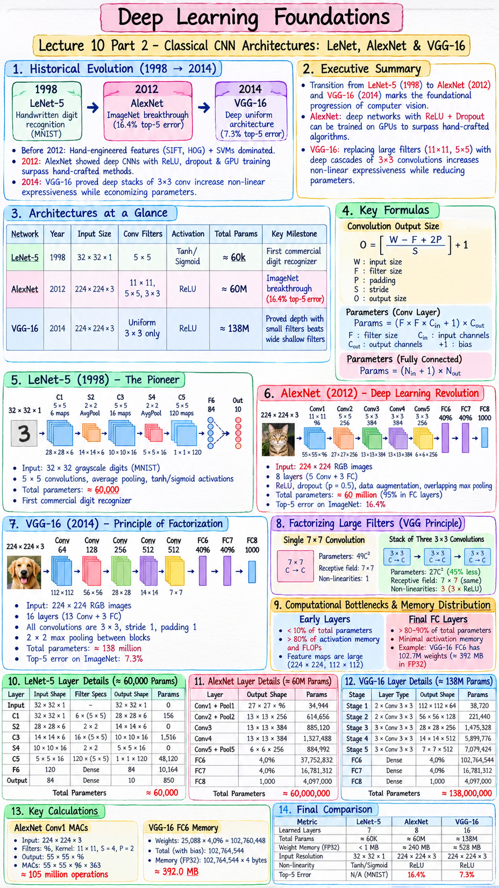

Executive Summary & Formula Sheet
Core Concept: The transition from LeNet-5 (1998) to AlexNet (2012) and VGG-16 (2014) marks the foundational progression of computer vision from shallow handwriting recognition to deep, high-resolution visual understanding. AlexNet demonstrated that deep networks with non-saturating activations (ReLU) and regularisation (Dropout) can be trained on GPUs to surpass hand-crafted algorithms. VGG-16 proved that replacing heterogeneous large filters (\(11\times 11, 5\times 5\)) with deep cascades of uniform \(3\times 3\) convolutions increases non-linear expressiveness while drastically economizing on parameters.
| Network | Year | Input Size | Conv Filters | Activation | Total Params | Key Milestone |
|---|---|---|---|---|---|---|
| LeNet-5 | 1998 | \(32 \times 32 \times 1\) | \(5 \times 5\) | Tanh / Sigmoid | \(\approx 60\text{k}\) | First commercial digit recognizer |
| AlexNet | 2012 | \(224 \times 224 \times 3\) | \(11\times 11, 5\times 5, 3\times 3\) | ReLU | \(\approx 60\text{M}\) | ImageNet breakthrough (16.4% top-5 error) |
| VGG-16 | 2014 | \(224 \times 224 \times 3\) | Uniform \(3 \times 3\) only | ReLU | \(\approx 138\text{M}\) | Proved depth with small filters beats wide shallow filters |
Lecture 10 Part 2 Visual Cheatsheet

Click image to open high-resolution version in new tab
1. Evolution of Deep Vision Architectures
1.1 Historical Arc: From 1998 to 2014
For over a decade following the creation of LeNet-5, computer vision remained dominated by hand-engineered feature pipelines: SIFT (Scale-Invariant Feature Transform), HOG (Histogram of Oriented Gradients), and Gabor filter banks paired with Support Vector Machines (SVMs). These systems were brittle, required years of domain-specific feature engineering, and could not scale to diverse open-world imagery.
1.2 The ImageNet Large Scale Visual Recognition Challenge
The turning point arrived with the ImageNet challenge (ILSVRC): 1.2 million high-resolution color training images distributed across 1,000 distinct object classes. In 2012, Alex Krizhevsky, Ilya Sutskever, and Geoffrey Hinton entered AlexNet, achieving a top-5 error rate of 16.4%, demolishing the runner-up (26.2%) by an unprecedented 10 percentage points. This single event ignited the modern deep learning boom.
1.3 Paradigm Shift: Handcrafted Features to Learned Hierarchies
The core breakthrough of AlexNet and VGG was demonstrating that deep convolutional networks could learn optimal spatial representations end-to-end directly from raw pixels, obsoleting decades of manual feature design.
2. LeNet-5: The Pioneer Network (1998)
2.1 Architecture Design & Digit Recognition
Designed by Yann LeCun et al. at Bell Labs for handwritten check and zip-code recognition (MNIST), LeNet-5 introduced the iconic foundational sequence: Conv \(\to\) Pool \(\to\) Conv \(\to\) Pool \(\to\) FC \(\to\) Output.
Input images were \(32 \times 32\) grayscale digits. Convolutions utilized \(5 \times 5\) filters with valid padding, causing spatial sizes to shrink systematically.
2.2 Subsampling (Average Pooling) & Sigmoid/Tanh
In 1998, max pooling and ReLU had not yet been popularized. LeNet-5 utilized Average Pooling (Subsampling) with trainable coefficients and sigmoidal/tanh activations. Because tanh saturates when activations grow large (\(|z| > 2\)), training deeper networks was prevented by severe vanishing gradients.
2.3 Exact Layer Breakdown (~60,000 Parameters)
- Input: \(32 \times 32 \times 1\)
- C1 (Conv): 6 filters of size \(5 \times 5\), stride 1, valid padding \(\implies 28 \times 28 \times 6\). Parameters: \((5 \times 5 \times 1 + 1) \times 6 = \mathbf{156}\).
- S2 (AvgPool): \(2 \times 2\) pool, stride 2 \(\implies 14 \times 14 \times 6\). (LeNet learned 2 params per channel \(= 12\)).
- C3 (Conv): 16 filters of size \(5 \times 5\), custom channel map \(\implies 10 \times 10 \times 16\). Parameters: \(\mathbf{1,516}\).
- S4 (AvgPool): \(2 \times 2\) pool, stride 2 \(\implies 5 \times 5 \times 16\).
- C5 (Conv / FC): 120 filters of size \(5 \times 5 \implies 1 \times 1 \times 120\). Parameters: \((5 \times 5 \times 16 + 1) \times 120 = \mathbf{48,120}\).
- F6 (FC): 84 units fully connected \(\implies \mathbf{10,164}\) parameters.
- Output: 10 Euclidean RBF units \(\implies 840\) parameters.
- Total Parameters: \(\approx \mathbf{60,000}\) weights.
3. AlexNet: The Deep Learning Revolution (2012)
3.1 Architectural Leap: 8 Layers & Dual-GPU Split
AlexNet scaled deep vision by an order of magnitude: 8 learned layers (5 Convolutional + 3 Fully Connected) trained on \(224 \times 224 \times 3\) RGB images. Because GPUs in 2012 (NVIDIA GTX 580) had only 3 GB of VRAM, the network was split across two GPUs running in parallel, communicating cross-GPU activations only at specific layer boundaries.
3.2 Breakthrough Innovations
- Rectified Linear Units (ReLU): Replaced saturating tanh with \(f(x) = \max(0, x)\). Accelerated convergence speed by 6x and resolved vanishing gradients.
- Dropout (p = 0.5): Applied to FC6 and FC7 to prevent catastrophic memorization among its 60 million weights.
- Data Augmentation: Random \(224 \times 224\) crops from \(256 \times 256\) images, horizontal reflections, and PCA color jittering artificially multiplied dataset size by 2048x.
- Overlapping Max Pooling: Used \(3 \times 3\) pooling windows with stride \(S = 2\), reducing top-1 error by 0.4% and suppressing blurriness.
3.3 Layer-by-Layer Parameter Count (~60 Million Parameters)
AlexNet contains roughly 60 million parameters. However, over 58 million (95%) reside purely in the final three fully-connected layers (specifically, the massive transition from Conv5 \(6 \times 6 \times 256 = 9,216\) to FC6 \(4,096\) accounts for \(37.7\) Million weights alone!).
4. VGG-16: The Principle of Factorization (2014)
4.1 The Philosophy of Structural Uniformity
Created by Karen Simonyan and Andrew Zisserman at Oxford (Visual Geometry Group), VGG asked a foundational question: Can we make CNNs deeper simply by fixing all architectural hyper-parameters to the smallest viable values?
VGG discarded all heterogeneous filters (\(11\times 11, 7\times 7, 5\times 5\)). Every single convolutional layer in VGG uses kernel size \(3 \times 3\), stride 1, and same padding \(P = 1\). Downsampling is handled strictly by \(2 \times 2\) Max Pooling layers with stride 2 placed between convolutional blocks.
4.2 Factorizing Large Filters into Stacks of 3x3 Convolutions
Consider the receptive field and parameter count of replacing a single \(7 \times 7\) convolution with a stack of three \(3 \times 3\) convolutions (all with \(C\) channels):
- Single \(7 \times 7\) layer: Receptive field = \(7 \times 7\). Parameters = \(7 \times 7 \times C^2 = \mathbf{49 C^2}\). Non-linear activations = 1.
- Stack of three \(3 \times 3\) layers:
- Layer 1: RF = \(3 \times 3\)
- Layer 2: RF = \(3 + (3-1) = 5 \times 5\)
- Layer 3: RF = \(5 + (3-1) = 7 \times 7\)
The \(3 \times 3\) cascade achieves the identical receptive field while slashing parameter count by 45% and tripling non-linear representational capacity!
4.3 16-Layer Deep Pipeline (~138 Million Parameters)
VGG-16 arranges its 13 convolutional and 3 dense layers into 5 homogeneous stages. Whenever spatial dimensions are halved by max pooling (\(224 \to 112 \to 56 \to 28 \to 14 \to 7\)), channel capacity is systematically doubled (\(64 \to 128 \to 256 \to 512 \to 512\)), keeping computational volume roughly constant across stages.
5. Comprehensive Layer-by-Layer Dimension Tracing
5.1 LeNet-5 Dimension & Parameter Table
| Layer | Input Shape | Filter Specs | Output Shape | Parameters |
|---|---|---|---|---|
| Input | \(32 \times 32 \times 1\) | - | \(32 \times 32 \times 1\) | 0 |
| C1 (Conv) | \(32 \times 32 \times 1\) | \(6 \times (5\times 5), S=1, P=0\) | \(28 \times 28 \times 6\) | \((25\times 1 + 1)\times 6 = 156\) |
| S2 (Pool) | \(28 \times 28 \times 6\) | \(2 \times 2, S=2\) | \(14 \times 14 \times 6\) | 0 (deterministic) |
| C3 (Conv) | \(14 \times 14 \times 6\) | \(16 \times (5\times 5), S=1, P=0\) | \(10 \times 10 \times 16\) | 1,516 |
| S4 (Pool) | \(10 \times 10 \times 16\) | \(2 \times 2, S=2\) | \(5 \times 5 \times 16\) | 0 |
| C5 (Conv) | \(5 \times 5 \times 16\) | \(120 \times (5\times 5), S=1, P=0\) | \(1 \times 1 \times 120\) | \((400 + 1)\times 120 = 48,120\) |
| F6 (FC) | \(120\) | Dense | \(84\) | \((120 + 1)\times 84 = 10,164\) |
| Output | \(84\) | Dense | \(10\) | \((84 + 1)\times 10 = 850\) |
5.2 AlexNet Dimension & Parameter Table
| Layer | Input Shape | Filter Specs | Output Shape | Parameters |
|---|---|---|---|---|
| Input | \(224 \times 224 \times 3\) | - | \(224 \times 224 \times 3\) | 0 |
| Conv1 + Pool1 | \(224 \times 224 \times 3\) | \(96 \times (11\times 11), S=4, P=2\) \(\to\) Pool \(3\times 3, S=2\) | \(27 \times 27 \times 96\) | \((363 + 1)\times 96 = 34,944\) |
| Conv2 + Pool2 | \(27 \times 27 \times 96\) | \(256 \times (5\times 5), S=1, P=2\) \(\to\) Pool \(3\times 3, S=2\) | \(13 \times 13 \times 256\) | \((2400 + 1)\times 256 = 614,656\) |
| Conv3 | \(13 \times 13 \times 256\) | \(384 \times (3\times 3), S=1, P=1\) | \(13 \times 13 \times 384\) | \((2304 + 1)\times 384 = 885,120\) |
| Conv4 | \(13 \times 13 \times 384\) | \(384 \times (3\times 3), S=1, P=1\) | \(13 \times 13 \times 384\) | \((3456 + 1)\times 384 = 1,327,488\) |
| Conv5 + Pool5 | \(13 \times 13 \times 384\) | \(256 \times (3\times 3), S=1, P=1\) \(\to\) Pool \(3\times 3, S=2\) | \(6 \times 6 \times 256\) | \((3456 + 1)\times 256 = 884,992\) |
| FC6 | \(6 \times 6 \times 256 = 9,216\) | Dense + Dropout | \(4,096\) | \((9216 + 1)\times 4096 = \mathbf{37,752,832}\) |
| FC7 | \(4,096\) | Dense + Dropout | \(4,096\) | \((4096 + 1)\times 4096 = \mathbf{16,781,312}\) |
| FC8 (Output) | \(4,096\) | Dense \(\to\) Softmax | \(1,000\) | \((4096 + 1)\times 1000 = \mathbf{4,097,000}\) |
5.3 VGG-16 Dimension & Parameter Table
| Stage | Layer Type | Output Feature Map | Weights / Filter Form | Stage Parameters |
|---|---|---|---|---|
| Stage 1 | 2x Conv \(3\times 3\), Pool | \(112 \times 112 \times 64\) | \(3 \to 64 \to 64\) | \(1,792 + 36,928 = 38,720\) |
| Stage 2 | 2x Conv \(3\times 3\), Pool | \(56 \times 56 \times 128\) | \(64 \to 128 \to 128\) | \(73,856 + 147,584 = 221,440\) |
| Stage 3 | 3x Conv \(3\times 3\), Pool | \(28 \times 28 \times 256\) | \(128 \to 256 \to 256 \to 256\) | \(295,168 + 2\times 590,080 = 1,475,328\) |
| Stage 4 | 3x Conv \(3\times 3\), Pool | \(14 \times 14 \times 512\) | \(256 \to 512 \to 512 \to 512\) | \(1,180,160 + 2\times 2,359,808 = 5,899,776\) |
| Stage 5 | 3x Conv \(3\times 3\), Pool | \(7 \times 7 \times 512\) | \(512 \to 512 \to 512 \to 512\) | \(3 \times 2,359,808 = 7,079,424\) |
| FC6 | Dense + Dropout | \(4,096\) | \((7\times 7\times 512) \to 4096 = 25088 \to 4096\) | \(\mathbf{102,764,544}\) |
| FC7 | Dense + Dropout | \(4,096\) | \(4096 \to 4096\) | \(\mathbf{16,781,312}\) |
| FC8 | Dense \(\to\) Softmax | \(1,000\) | \(4096 \to 1000\) | \(\mathbf{4,097,000}\) |
6. Computational Bottlenecks & Memory Distribution
6.1 The Parameter vs Memory Paradox
In deep CNN architectures like AlexNet and VGG-16, there is an extreme, inverted divergence between where memory (activation RAM / compute FLOPs) is consumed versus where weights (parameter count) live:
- Early Convolutional Layers: Contain less than 10% of the total weights, but consume over 80% of total activation memory and FLOPs! This occurs because the feature maps are massive (\(224 \times 224, 112 \times 112\)).
- Final Fully Connected Layers: Consume almost no activation memory (\(4096\) floats is negligible), but contain over 80% to 90% of all trainable parameters!
6.2 Why Early Layers Consume 80% of Activation RAM
During training, the backward pass requires caching all intermediate forward feature map activations to compute gradients. In VGG Stage 1, a single feature map tensor \([B, 64, 224, 224]\) with batch size 32 requires: \(32 \times 64 \times 224 \times 224 \times 4 \text{ bytes} \approx \mathbf{411 \text{ MB}}\) of VRAM for one layer alone!
6.3 Why Dense FC Layers Account for 80% of Weights
When the final convolutional tensor (\(7 \times 7 \times 512 = 25,088\)) is flattened and connected to FC6 (\(4,096\)), every single spatial element connects to every hidden neuron. This single layer produces \(25,088 \times 4,096 = 102.7\) Million weights! This massive parameter bottleneck motivated later architectures (GoogLeNet, ResNet) to replace FC layers entirely with Global Average Pooling.
7. Step-by-Step Worked Architectural Calculations
7.1 AlexNet Conv1 Dimensions and Flops
Calculate the exact output shape and number of multiply-accumulate operations (MACs) for AlexNet Layer 1:
- Input: \(224 \times 224 \times 3\), Filters: 96, Kernel: \(11 \times 11\), Stride: 4, Padding: 2.
Output spatial dimension: $$O = \left\lfloor \frac{224 - 11 + 2(2)}{4} \right\rfloor + 1 = \left\lfloor \frac{217}{4} \right\rfloor + 1 = 54 + 1 = \mathbf{55 \times 55}$$
Output shape: \([96, 55, 55]\) (30,250 output pixels).
Operations per output pixel: \(11 \times 11 \times 3 = 363\) multiplications.
Total MACs: \(55 \times 55 \times 96 \times 363 \approx \mathbf{105.4 \times 10^6}\) (105 Million operations in Conv1 alone!).
7.2 VGG-16 Dense FC6 Transition Shock
Calculate the memory footprint of storing only the weights of VGG-16 layer FC6 in FP32 (4 bytes per float):
Weights count: \(25,088 \times 4,096 = 102,760,448\) weights.
Biases count: \(4,096\) biases.
Total floats: \(102,764,544\) values.
Memory size on disk / GPU RAM: $$\text{Size} = \frac{102,764,544 \times 4}{1024 \times 1024} \approx \mathbf{392.0 \text{ MB}}$$
A single layer requires nearly 400 Megabytes just to store its weight matrix!
7.3 Architectural Comparison Summary Matrix
| Metric | LeNet-5 (1998) | AlexNet (2012) | VGG-16 (2014) |
|---|---|---|---|
| Learned Layers | 7 (5 Conv/Pool + 2 FC) | 8 (5 Conv + 3 FC) | 16 (13 Conv + 3 FC) |
| Total Parameters | \(\approx 60\) Thousand | \(\approx 60\) Million | \(\approx 138\) Million |
| Weight Memory (FP32) | \(< 1\) MB | \(\approx 240\) MB | \(\approx 528\) MB |
| Input Resolution | \(32 \times 32 \times 1\) | \(224 \times 224 \times 3\) | \(224 \times 224 \times 3\) |
| Non-linearity | Tanh / Sigmoid | ReLU | ReLU |
| Top-5 Error (ImageNet) | N/A (MNIST) | 16.4% | 7.3% |
Original PDF Notes
Below is the original PDF document for Lecture 10 Part 2 (Inside LeNet, AlexNet & VGG-16 Worksheet):